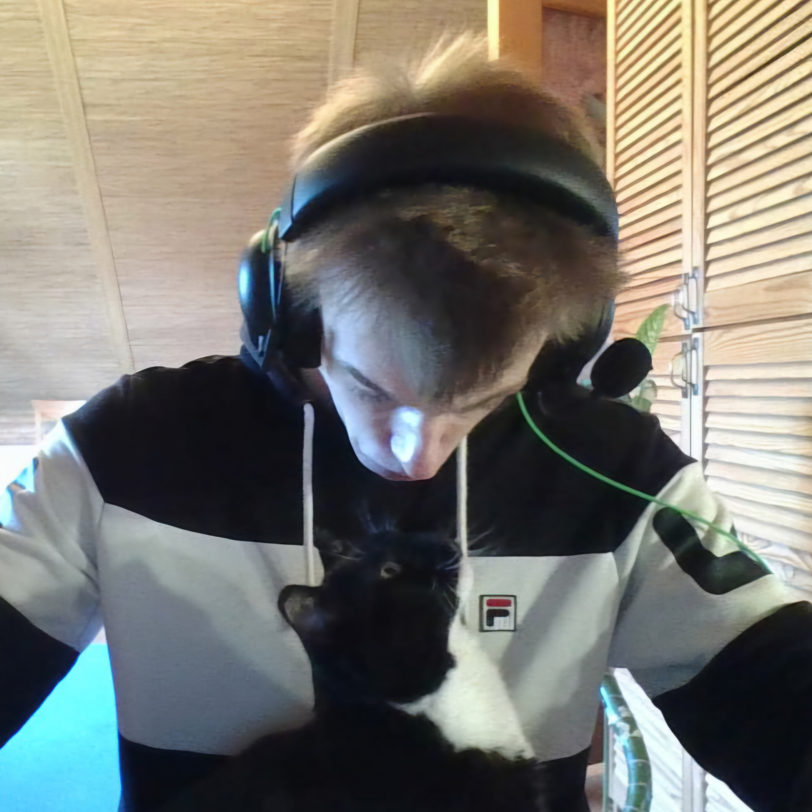

Повсюду одни обязательства. Разве не так вообще работает в науке? Есть ученый, занимающийся делом, которое ему интересно — у него нет никаких обязательств. Через десятилетия находится еще ученый, который собирает интересующие его труды предшественников, продолжает их, систематизирует и улучшает? Единственное отличие ученого от кого-нибудь другого заключается в том, что первый создает вокруг себя такую обстановку, в которой может свести к минимуму выполнение всех существующих в мире обязательств и сосредоточиться на том, что ему действительно интересно в настоящий момент.

2024
p-ecosystema.
p-the-burden.
p-poputchik.
p-reflection.
p-cup-russia.
p-own-site.
p-yandex.
p-voronka.
p-tutoring.
p-ai-ielts.
p-space.
p-hse-2.
p-systematization-2.
p-health-5.
2023
p-yandex-internship.
p-active-school.
p-more-tech.
p-codenrock.
p-reflection.
p-cubic.
p-hse-1.
p-systematization-1.
p-gamedev-2.
p-webeye-2.
p-health-4.
2022
p-last-christmas-remix.
p-just-worms.
p-calculator.
p-onmap.
p-gamedev-1.
p-webeye-1.
p-yandex-academy-2.
p-health-3.
2021
p-geek-brains.
p-yandex-academy-1.
p-health-2.
p-iepho-2.
p-creativity-4.
2020
p-lake-hike.
p-health-1.
p-iepho-1.
p-creativity-3.
p-robotics-4.
p-swimming-5.
p-workout-5.
2019
p-geek-brains-2.
p-creativity-2.
p-robotics-3.
p-swimming-4.
p-workout-4.
2017 — 2018
p-geek-brains-1.
p-creativity-1.
p-robotics-2.
p-swimming-3.
p-workout-3.
2016
p-robotics-1.
p-technical-modeling-2.
p-go-checkers-2.
p-swimming-2.
p-workout-2.
p-football-2.
2012 — 2015
p-technical-modeling-1.
p-go-checkers-1.
p-swimming-1.
p-workout-1.
p-football-1.
2005 — 2011
p-childhood.
p. — это проект, он представляет собой цель, информацию,
которую можно отнести к этому проекту, а также ссылки и ссылки на
связанные проекты
Ссылки
Описание
Бремя! Космос будет открыт и исследован.
Название: бремя!
Момент начала: июнь 2024.
Момент завершения: июль 2025.
Дополнительно: был реализован задел с июня 2022.
Объяснение
Общее.
Сюжет 1. Человек создает робота, который, в свою очередь, создает этого человека.
Сюжет 2. Поезд демонстрирует, что постоянно пытаешься выхватить какой-то кусочек цельной картины, но цельную картину никак не получается собрать, а как собрал, то оказывается, что собрал не ту и не понимаешь, чего на самом деле хочешь. Конец Общее.
Трек 1. Космос = детство, дурачество, исследование мира, природы, всякие интересные штуки [вильгельм улыбается].
1. Сандушнилас, фигачить цельно = мой девиз до апреля 2024 где-то.
2. Кубик рубика собирает = мне просто очень нравилось собирать
кубик-рубика, через него узнал о такой идее, как мышечная память,
мелкая моторика. Конец Трек 1.
ПЕРЕХОД 1. Содержит в себе.
1. Влюбленность, поскольку сначала думаешь, что человек, в
которого влюбился, похож на того, с кем ты хочешь быть, но
чертовски далеко, поскольку боишься подойти даже.
2. Взаимодействие с кем-то.
3. Душу ребенка, поскольку она как прекрасная вселенная, но толька
пока похожа на прекрасную вселенную, поскольку с взрослением
обсохнет и зачерствеет, скорее всего.
Конец ПЕРЕХОД 1.
Трек 2. Будет = Тяжелейший этап психологического созревания, зачастую самой сложной частью которого является любовь или просто депрессия от нелюбви к себе и миру [вильгельм грустит].
1. Категория балансирующий робот = время, когда сильнее всего
пытаешься балансировать на своих чувствах.
2. Попробовал собрать такого робота = попробовал сбалансировать
свои чувства и получил по менталке.
3. Угар = становится смешно, поскольку собрал балансирующего
робота и все равно получил по менталке. Конец Трек 2.
ПЕРЕХОД 2. Содержит в себе.
1. Рефлексия, подводим каждую неделю итожики.
2. Отходное состояние после неудачной попытки построить первые
отношения в течение года во время 11 класса, когда к ЕГЭшку ботал
еще.
3. Закрываешь раны тем, что просто дофига работаешь, чтобы
переключить внимание своего мозга с реального анализа, почему не
получилось отношения построить, на работу.
Конец ПЕРЕХОД 2.
Трек 3. Открыт = осознание своих желаний и идей, сильно более адекватное понимание того, что ты хочешь делать, но тоже не без психологических напрягов (нелюбимая работа и невозможность отдаться своим идеям по разным причинам), хотя они уже просто цветочки [вильгельм грустит].
1. Алгоритм знаю, но программу сложно написать = как действовать в
общем шарю, но какие конкретные действия предпринимать, мне
непонятно.
2. Касаться только колесами, даже если перевернется = если будет
снова ехать в сторону построения отношений, то будет касаться
дороги только колесами, чтобы в случае повторного переворота
остаться более живым, чем в прошлый раз.
3. У него получилось, роботу вообще, все равно = он в целом +-
смог справиться, поскольку если во время движения робота он
переворачивается, то он может дальше ехать, хотя на какое-то время
может остановиться или даже поехать назад.
4. Программа медленного ускорения = постепенно начинает набирать
обороты в темпе роста, поскольку прощупывает направление, в
котором будет двигаться дальше и все лучше понимает его.
5. Можно датчики прицепить = трекинг своей жизни, чтобы можно было
лучше анализировать прошлое, но дороги ими касатся робот не будет,
поскольку эти датчики никак не тормозят движение.
6. В какую сторону, вот смотри, вот сюда = боевая готовность к
программе ускорения.
7. Погнал погнал и пришлось остановить рукой, поскольку погнал то
не туда. Конец Трек 3.
ПЕРЕХОД 3. Содержит в себе.
1. Нет датчика цвета, вот так живем, возьму потом датчик цвета =
нет возможности различить сходу ту или иную траекторию, потом уже
после долгого ощупывания получится различить целиком как по цвету.
2. Надо будет отнести его, чтобы прогать = нужно программировать
системное ощупывание, чтобы оно было эффективным и
последовательным, окружение будет программировать робота.
3. Опоры у него могут пошатываться, но на них сильно не опирается
= но робот не опирается на окружение как на опоры, поскольку
окружение может пошатываться: робот доверяет окружению, но в
принципиальных вещах доверяет только своим колесам и возможности
балансировать.
4. Поворачивать без проблем будет двумя колесами = поэтому сможет
легко менять траекторию ощупывания, если сочтет это нужным.
5. Я его принесу его, попробуешь написать линию = попробуешь как
окружение направить робота в нужное русло.
6. Но у него вместо датчика цвета стоит датчик касания = но он не
поверит всем твоим словам, а самостоятельно прощупает свой путь.
Конец ПЕРЕХОД 3.
Трек 4. И исследован = погружения в свои идеи и работа над ними. Ответственное отношение к своему времени и безжалостное отношение к общению, которое неинтересно [вильгельм бесконечно исследует свои идеи].
Часть 1.
1. ОКР личности = промежуточное заключение робота на июнь 2023,
чтобы объяснить как-то свое прошлое и настоящее.
2. Переехал в контекст проблемы, понимает что нужно делать и с мая
месяца жестко работает над собой = прогресс есть [на ролике робот
понимает, куда ему нужно ехать и какую задачу решать, какую
проблему устранять, он рассаживает деревья в нужные зоны и
собирает в одну кучу отходы вокруг себя, оставленные им самим, а
также окружением].
3. Другой способ, который робот выучил, может быть быстрее, если
его долго отрабатывать, но пока что он медленнее = робот пробует
работать на длительную перспективу и регулярно стремиться
обновлять свой арсенал инструментов для прощупывания пути.
Конец Часть 1.
ПЕРЕХОД 4. Содержит в себе.
Поезд собрался в цельную картинку, но:
1. Робот тем не менее не понимает, чего он хочет, он пытается
изучить свою внутреннюю далекую вселенную, которая только пока
похожа на его описание этой далекой вселенной.
2. Робот пытается проанализировать свое взаимодействие с кем-то,
влюбленность.
3. Робот пытается вспомнить свое детство, проанализировать его,
но, к сожалению, он может пользоваться только искаженным прошлым.
Конец ПЕРЕХОД 4.
Часть 2.
1. Множество видео с наушниками, робот постепенно становится
человеком?
2. Человек смотрит, куда едет его окружение, но у человека
раздвоение личности?
3. Видит кого-то, кто поворачивает на его траекторию и следит за
ним.
4. Но обе личности разгоняются в одном направлении, при этом
постепенно появляется и еще одно основное направление без
окружения.
5. Оно опасное, но засасывает человека, поэтому он движется по
новой траектории.
6. Все это время его постоянно мучают разные мысли и идеи, человек
думает, но не может найти себе место, на которое сядет надолго, на
котором остановится надолго.
7. Он вспоминает отрывисто свое прошлое и пытается собрать его в
цельную картинку, снова запускает запись жизни, чтобы в будущем
все повторить, сейчас человек надорвался / выгорел.
Конец Часть 2. Конец Трек 4.
ФИНАЛ.
На время человек делает паузу и снова смотрит в то самое заманчивое направление, куда будет двигаться. Конец ФИНАЛ.